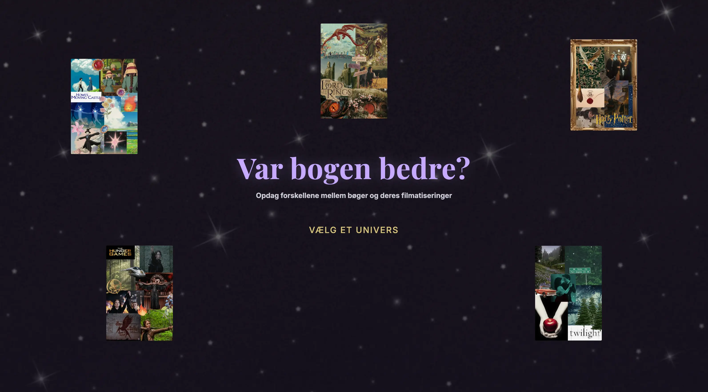

Grundlaeggende UX/UI
I tema 3 blev jeg introduceret til grundlæggende UX/UI, som handler om samspillet mellem brugere og digitale brugergrænseflader. Her fik jeg en forståelse for, hvordan research, design, prototyping og brugertests kan bruges til at udvikle brugervenlige løsninger. Derudover fik jeg erfaring med at dokumentere og præsentere hele min designproces fra idé til færdig løsning.
Min løsning
I dette tema skulle vi udvikle en hjemmeside om et selvvalgt emne. Jeg valgte at undersøge forholdet mellem bøger og deres filmatiseringer for at finde ud af, om bogen faktisk er bedre end filmen. Derfor kaldte jeg min hjemmeside "Var bogen bedre?". Under udviklingen af sitet anvendte jeg de metoder, vi havde lært i undervisningen, herunder research, design, prototyping og brugertests. På baggrund af min research udarbejdede jeg moodboards, wireframes og digitale prototyper i Figma.
Undervejs gennemførte jeg brugertests, blandt andet tænke-højt-test og 5-sekunders-test, for at få indsigt i brugernes oplevelse af sitet. Resultaterne brugte jeg til at forbedre designet gennem iterationer og skabe en mere brugervenlig løsning. Efter at have testet og videreudviklet min prototype begyndte jeg at kode hjemmesiden i HTML og CSS og omsatte dermed mine designidéer til et færdigt produkt.

Min læring
En af de vigtigste læringer, jeg fik fra dette tema, var, at mine egne idéer ikke nødvendigvis stemmer overens med brugernes behov og forventninger. Gennem brugertests fik jeg konkrete indsigter, som gjorde det muligt at forbedre både design og funktionalitet. Det gav mig en større forståelse for værdien af iterative processer, hvor en løsning løbende udvikles og optimeres på baggrund af feedback.
Jeg lærte også vigtigheden af at arbejde struktureret gennem designprocessen. Hvis research, idéudvikling og planlægning ikke er på plads fra starten, kan det gøre den videre udvikling mere udfordrende. Temaet gav mig derfor en bedre forståelse for, hvordan de forskellige faser i en designproces hænger sammen, og hvorfor det er vigtigt at arbejde i den rette rækkefølge.